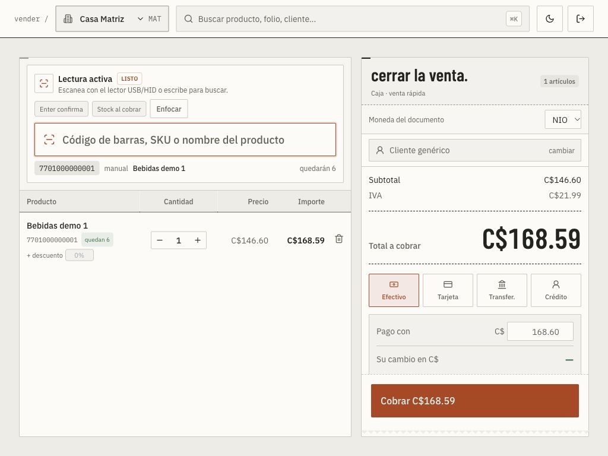

vendé rápido, cuadrá la caja y no pierdas fiados.
mucho movimiento, poco margen por producto y clientes que pagan después. anaquel hace que cobrar tome un segundo y que la caja cuadre al cerrar.

los problemas de las pulperías y minisúper.
la caja no cuadra
al cerrar el turno falta plata y no se sabe dónde ni de quién.
el fiado se olvida
se anota en un cuaderno, se pierde la cuenta y se pierde la plata.
se cae el internet
sin conexión no se vende. cada minuto parado es plata que se va.
lo que hace anaquel por tu negocio.
- cobro en un segundo: escaneás o buscás, elegís cómo paga y sale el ticket.
- apertura y cierre de caja por turno con arqueo: contás lo que hay y ves la diferencia al instante.
- modo sin internet: la caja sigue vendiendo y sincroniza sola al volver la red.
- fiado con límite por cliente y estado de cuenta, con antigüedad de saldos.
- impresora de tickets, cajón de dinero y balanza desde el navegador, sin instalar drivers.
- perfil de pulpería: el sistema pide datos propios del giro, como la caducidad del producto.
- alerta de productos bajo el mínimo para reponer a tiempo.
esencial · US$25 al mes
lo que preguntan las pulperías y minisúper.
¿qué pasa si se cae el internet en plena venta?
Seguís vendiendo. Las ventas se guardan en la caja y se envían solas cuando vuelve la red, sin duplicarse.
¿necesito comprar equipo especial?
No para empezar. Funciona en computadora o teléfono. Si querés, conectás impresora de tickets, cajón de dinero y balanza; se configuran desde el navegador.
¿puedo escanear con el celular?
Sí. Abrís el lector en la caja, escaneás el QR con el teléfono y usás su cámara como lector de códigos de barras.
sabé dónde está tu plata.
escribime por whatsapp y en 7 minutos te muestro anaquel funcionando con un negocio como el tuyo. sin compromiso.